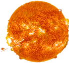
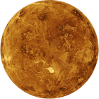
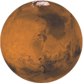

Pianeti precedenti la Fascia Principale
Sole

- Periodo Orbitale: (2,25-2,50)x108 giorni
- Velocità Orbitale media: 217 km/s
- Superficie: 6,0877 x1018 m2
- Volume: 1,4122 x1027 m3
- Massa: 1,9891 x1030 kg
Mercurio
- Perielio: 4,6 x107 km
- Afelio: 6,982 x107 km
- Circonferenza Orbitale: 360000000 km
- Periodo Orbitale: 87,969 giorni
- Velocità Orbitale media: 47,36 km/s
- Satelliti: 0
- Superficie: 7,5 x1013 m2
- Volume: 6,083 x1019 m3
- Massa: 3,3011 x1023 kg
Venere

- Perielio: 1,0748 x108 km
- Afelio: 1,0894 x108 km
- Circonferenza Orbitale: 6,8 x108 km
- Periodo Orbitale: 224,701 giorni
- Velocità Orbitale media: 35,02 km/s
- Satelliti: 0
- Superficie: 4,6 x1014 m2
- Volume: 9,2843 x1020 m3
- Massa: 4,8675 x1024 kg
Terra
- Perielio: 147 098 074 km
- Afelio: 152 097 701 km
- Circonferenza Orbitale: 924 375 700 km
- Periodo Orbitale: 365,256366 giorni
- Velocità Orbitale media: 29,789 km/s
- Satelliti: 1 (Luna)
- Superficie: 5,094953216 x1014 m2
- Volume: 1,08321 x1021 m3
- Massa: 5,9726 x1024 kg
Marte

- Perielio: 206 644 545 km
- Afelio: 249 228 730 km
- Circonferenza Orbitale: 1 429 000 000 km
- Periodo Orbitale: 686,9600 giorni
- Velocità Orbitale media: 24,077 km/s
- Satelliti: 2
- Superficie: 1,448 x1014 m2
- Volume: 1,6318 x1020 m3
- Massa: 6,4185 x1023 kg